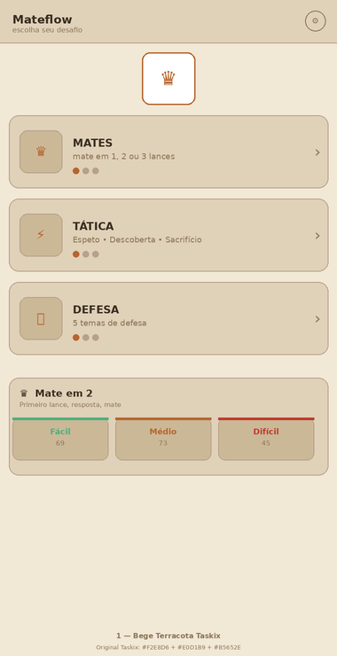
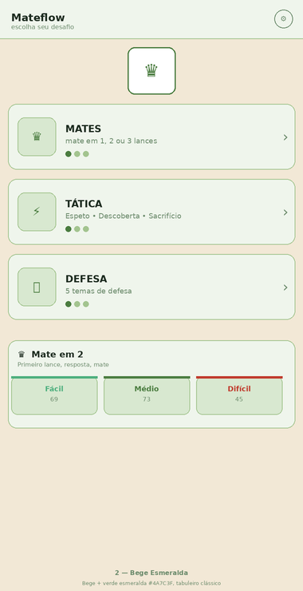
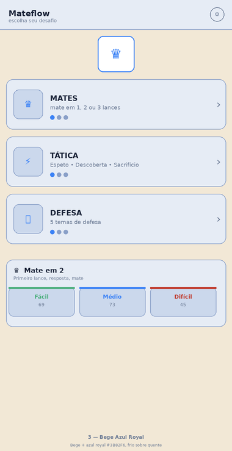
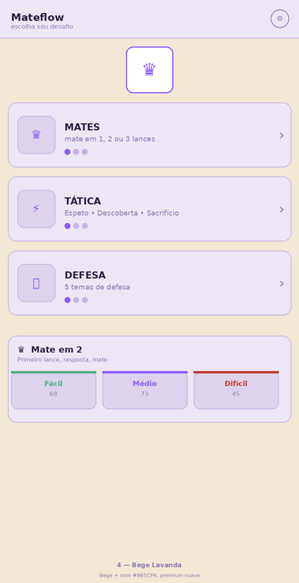
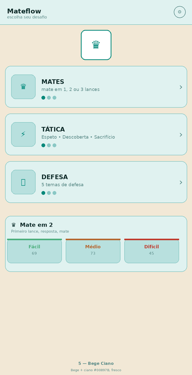
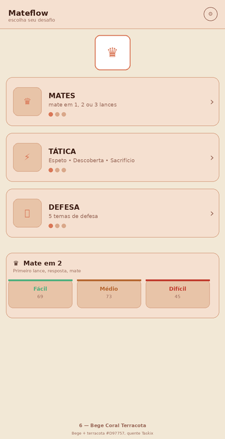
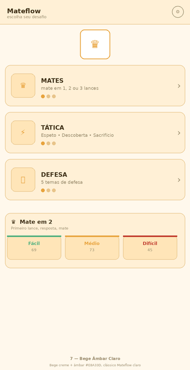
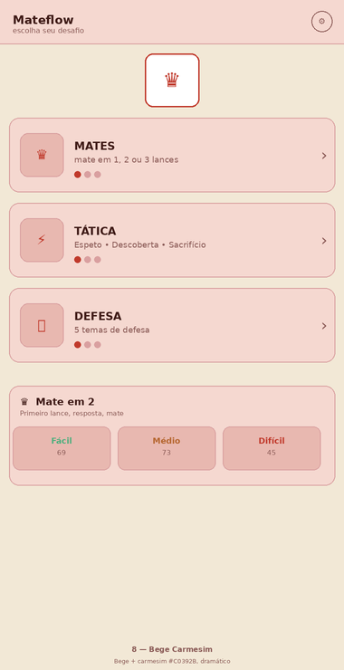
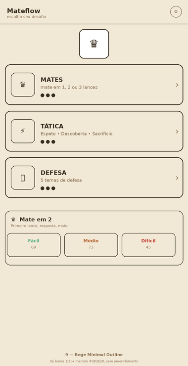
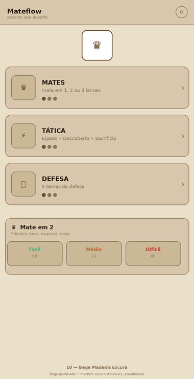

Base Bege #F2E8D6 / #E0D1B9 do Taskix com acentos variados — nítidas 2× — não implementadas

Original Taskix #F2E8D6 + #B5652E. Quente, amadeirado.

Bege + verde #4A7C3F. Tabuleiro clássico.

Bege + azul #3B82F6. Contraste quente-frio.

Bege + roxo #8B5CF6. Premium suave.

Bege + ciano #00897B. Fresco.

Bege + terracota #D97757. Quente vibrante.

Bege creme + âmbar #E8A33D. Mateflow claro.

Bege + carmesim #C0392B. Dramático.

Só borda 1.5px #382E20 sobre bege. Minimal.

Bege queimado + marrom escuro #6B4A2E. Amadeirado.